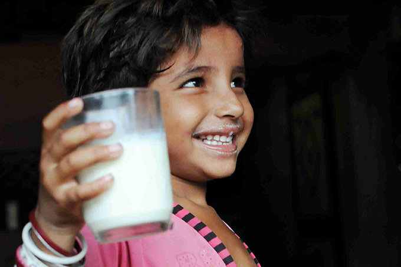

We aspire that every youth should broaden up their notion about their role
regarding eradication of social tribulations and inspire others to give a
helping hand.Our perspective is to form a society where every citizen should
understand their moral duties towards their society and work, hand in hand for
the betterment of our nation. Help others who need you, by joining us and serving
the nation through our believes and thoughts that we mention in our missions and
projects. You can also join our Internship program.

Shiksha Mission
Shiksha Mission is not all about educating the deprived kids.
Education is just a part of it. Here the motto is to literate them from all
the parameters which will help them to withstand in this competitive world.
Protsaahan
It is our Cultural Program, which is organized
annually for the underprivileged children, by the underprivileged children
having key aspects (skills) like Dance, Songs, Yoga, experience sharing,
Self defense (Karate) and various other co-curricular activities.

Gift Milk Initiative
Childhood brings with itself all those carefree days when we
were not scared of losing anything. Memories might be different
for everyone but the happiness we get with a simple flashback is what
we all mutually share.
